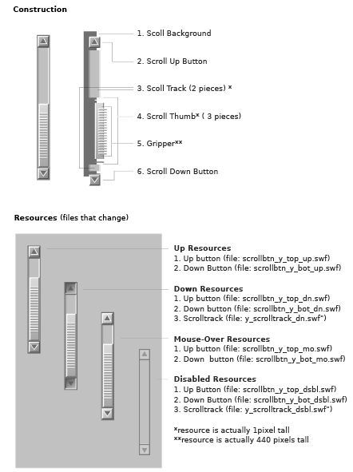

example
LZX Reference
filename: scrollbar.lzx
The scroll bar has separate classes and resources for each axis. For the purpose of simplicity, only the vertical version (aka Scroll Y) is covered in this document.
The scroll bar is defined by six pieces:
1. Scroll background
2. Up button
3. Scroll track
4. Scroll thumb (3 pieces) 5. Gripper 6. Down button
The scroll background is a colored LZX view that contains all of the resources. The view is offset to create a one pixel border around the scrollbar.
The scroll track is actually two views sandwiched between the up scroll button, the thumb and the down scroll button. The scroll track resizes as the thumb is moved to create the illusion of the thumb moving over it. The scroll track is a clickable resource which moves the thumb and scrolls the page. The scroll track has a down and disabled state, but no mouse-over.
The scroll thumb is a set of three scalable vector resources. The scrollbar changes its height based on the amount of content clipped within the scrolling content area.
The gripper is a very long (440 pixels) .PNG resource that overlays the thumb and is centered with a fixed amount padding. It is clipped and constrained to the height of the thumb (minus the padding). As a .SWF resource this file contains many points, and since it is not designed to scale, it is more efficient saved as a bitmap .PNG (approx. 60x smaller).
